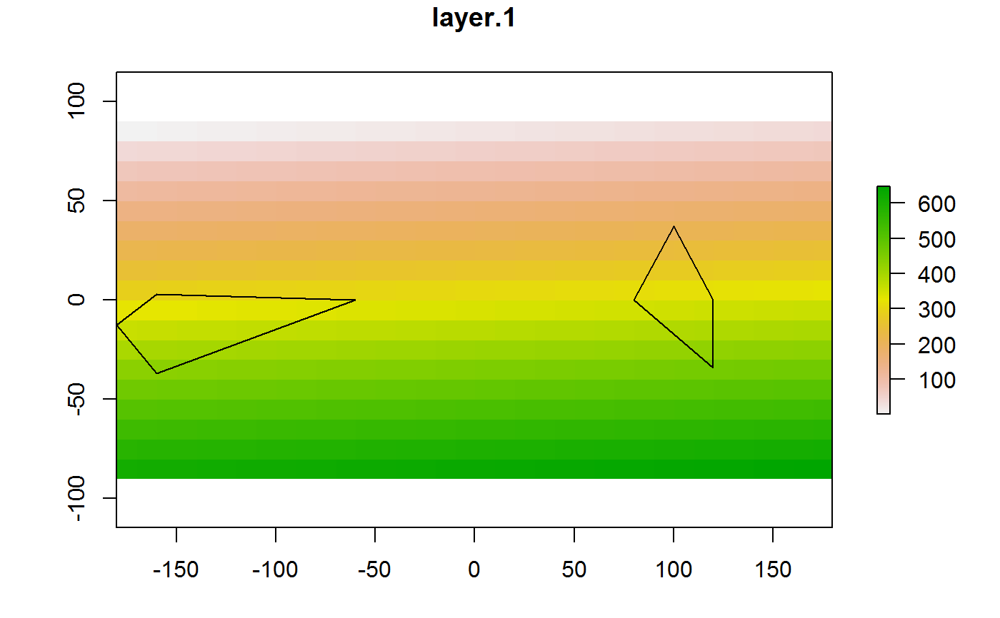

Extract values from raster layers for a given set of points or polygons. Using velox package in parallel for fast extraction.
fast_extract( sf = NULL, ras = NULL, funct = "mean.na", small.algo = FALSE, col.names = NULL, parallel = TRUE, n.cores = NULL )
| sf | sf data frame containing point or polygon data. |
|---|---|
| ras | A Raster* object (RasterLayer, RasterStack, or RasterBrick), a named list of Raster objects, or a character vector or list of paths to Raster files on disk (e.g. as obtained through |
| funct | The name of a function to summarise raster values within polygons. Default is 'mean.na' (simple average, excluding NA), but other functions can be used (in that case, provide function name without quotes, e.g. funct = median). See |
| small.algo | Logical. Use 'small' algorithm to detect overlap between polygons and raster cells? See |
| col.names | Optional. Character vector with names for extracted columns in the output dataframe. If not provided, the function will use the Raster* layer names or, if |
| parallel | Logical. Run function in parallel (using |
| n.cores | Number of cores to use when parallel = TRUE. If not specified, using all available cores (see |
A sf data frame with the same number of rows as the original, and new columns containing the extracted raster values.
library(raster)#>library(rgis) ## Example taken from raster::extract # Create polygons poly1 <- rbind(c(-180,-20), c(-160,5), c(-60, 0), c(-160,-60), c(-180,-20)) poly2 <- rbind(c(80,0), c(100,60), c(120,0), c(120,-55), c(80,0)) polys <- spPolygons(poly1, poly2) polys.sf <- sf::st_as_sf(polys) sf::st_crs(polys.sf) <- "+proj=longlat +datum=WGS84 +ellps=WGS84 +towgs84=0,0,0" # Create rasters r1 <- raster(ncol = 36, nrow = 18, vals = 1:(18*36)) r2 <- raster(ncol = 36, nrow = 18, vals = (1:(18*36))*2) ras <- stack(r1, r2) plot(ras, 1)# Extract values extract.parallel <- fast_extract(sf = polys.sf, ras = ras, parallel = TRUE) head(extract.parallel)#> Simple feature collection with 2 features and 2 fields #> geometry type: POLYGON #> dimension: XY #> bbox: xmin: -180 ymin: -60 xmax: 120 ymax: 60 #> CRS: +proj=longlat +datum=WGS84 +ellps=WGS84 +towgs84=0,0,0 #> geometry ras_layer.1 ras_layer.2 #> 1 POLYGON ((-180 -20, -160 5,... 387.8158 775.6316 #> 2 POLYGON ((80 0, 100 60, 120... 329.3913 658.7826extract.noparallel <- fast_extract(sf = polys.sf, ras = ras, parallel = FALSE) # Compare with raster::extract raster.extract <- raster::extract(ras, polys, fun = mean, df = TRUE) head(raster.extract)#> ID layer.1 layer.2 #> 1 1 387.8158 775.6316 #> 2 2 329.3913 658.7826### Providing named list of rasters ras.list <- list(r1 = r1, r2 = r2) rgis.out <- fast_extract(sf = polys.sf, ras = ras.list, parallel = FALSE) head(rgis.out)#> Simple feature collection with 2 features and 2 fields #> geometry type: POLYGON #> dimension: XY #> bbox: xmin: -180 ymin: -60 xmax: 120 ymax: 60 #> CRS: +proj=longlat +datum=WGS84 +ellps=WGS84 +towgs84=0,0,0 #> geometry r1_layer r2_layer #> 1 POLYGON ((-180 -20, -160 5,... 387.8158 775.6316 #> 2 POLYGON ((80 0, 100 60, 120... 329.3913 658.7826